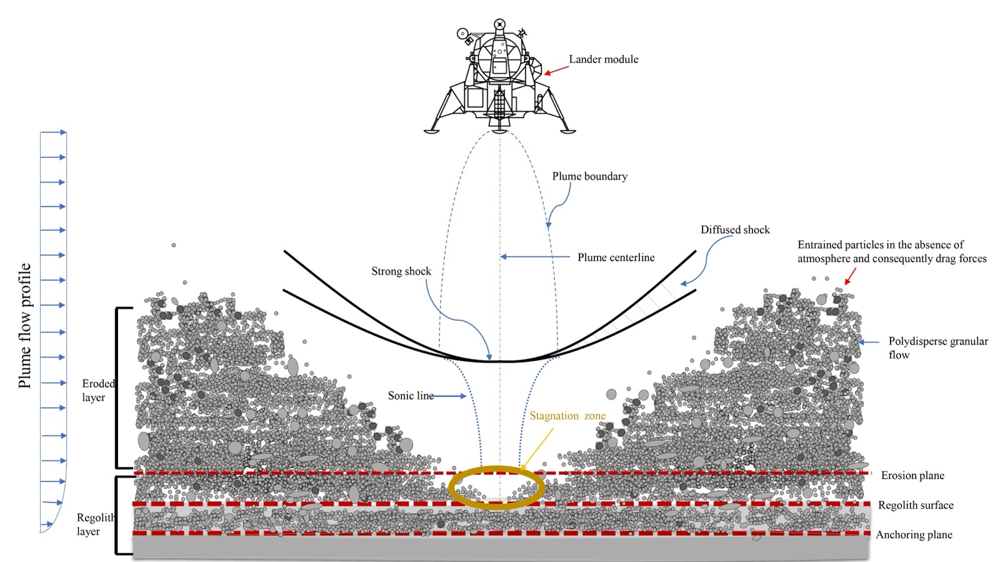
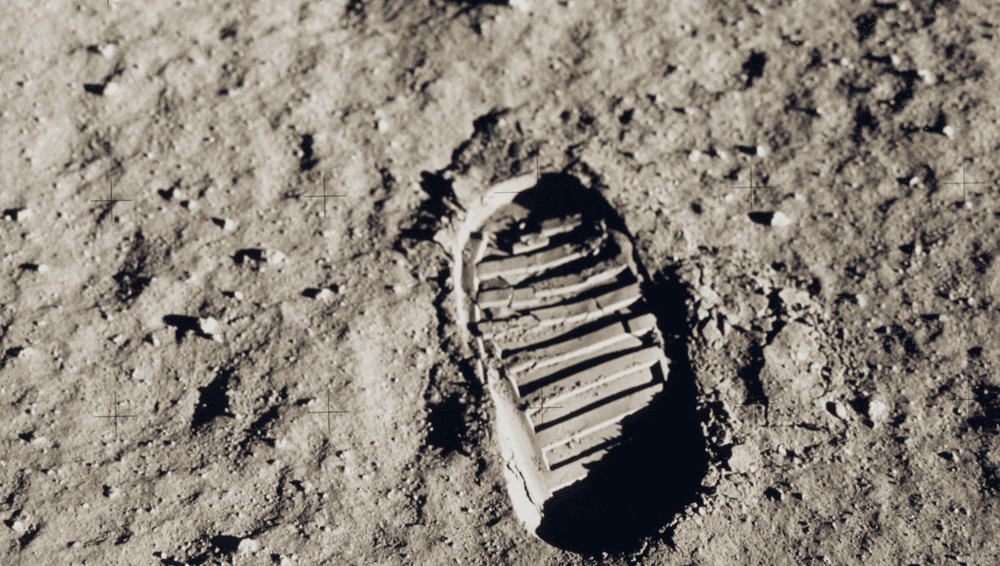
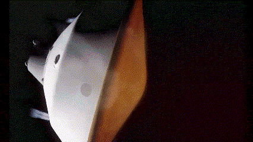
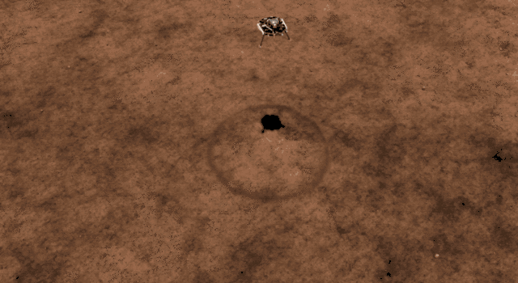
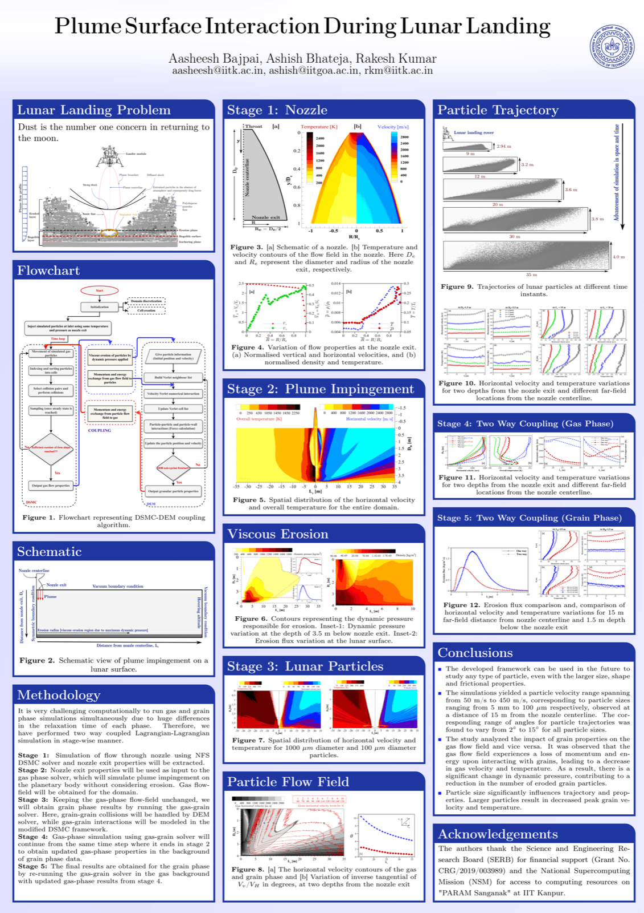

Dr. Aasheesh BajpaiStaff Engineer, R&D Engineering, Synopsys Formerly, Prime Minister Research Fellow (PMRF), Department of Aerospace Engineering, Indian Institute of Technology Kanpur Curriculum Vitae |
Hello, welcome to my webpage. I currently work as a Staff Engineer, R&D Engineering, at Synopsys. Previously, I was a Prime Minister Research Fellow (PMRF) at the Department of Aerospace Engineering at Indian Institute of Technology Kanpur, Kanpur (U.P.), India.
Before moving to Kanpur, I worked as a research assistant at IIT Kharagpur, West Bengal, India. My appointment as PMRF was possible through research opportunity I got during my time at the lab, I worked on enhancing exergetic efficiency of hydrogen liquefaction plant.
I pursued my doctoral studies under the guidance of Professor Rakesh Kumar Mathpal, in the non-equillibrium flow simulation laboratory(NFSL), IIT Kanpur. My research was on developing a coupled DSMC-DEM (Direct Simulation Monte Carlo -Discrete Element Method) framework for dusty gas flow simulation and analyzing the basic physics understanding behind lunar landing. In any space exploration mission during planetary descent, when a lander approaches towards the surface of an extraterrestrial body, the expanded supersonic plume from the nozzle exhaust of the engine produces a shock, fluidizes, and ejects granular particles from a surface. This creates one or more craters, and as a result, soil particles gain momentum. Consequently, this ejected matter would disperse dust and larger debris. The particles that are so dispersed have the potential to do severe damage. The present work aims to develop a high-fidelity simulation framework capable of modeling dusty gas flows encountered during plume surface interactions. The research work aims at performing dusty gas flow dynamics using a particle-based Lagrangian-Lagrangian computational framework. The solver that is developed for dusty gas flows is by coupling the in-house DSMC flow solver with the in-house DEM solver. Along with that I have also developed a CFD-DEM coupled solver for continuum applications along with my group in OpenFoam platform. This solver is used to calculate the crater diameter during lunar landing and shock particle interactions. The solver is a dusty gas flow solver which is well verified for supersonic dusty gas flows and have been used for applications like dusty gas flow over a cylinder and shock granular particle curtain interactions in shock tube.
In my previous academic pursuit, I was enrolled as a Masters student in the Process Equipment & Design Laboratory (PED lab) at the Indian Institute of Technology Kharagpur. My research primarily centered around the development of a Reverse Brayton Cryocooler (RBC) tailored for cooling high-temperature superconducting (HTS) cables. I worked under the guidance of Professor Parthasarathi Ghosh towards my thesis on "Development of test rig towards experimental investigation of Reverse Brayton Cryocooler used for cooling of High Temperature Superconductors". During this period, I played a pivotal role in the conversion of a decommissioned helium liquifier into a Reverse Brayton cryocooler. In this work we utilised heat exchangers and turboexpanders of helium liquifier to build a RBC for HTS cooling. Specifically, I was responsible for estimating the parameters of all heat exchang[...] Prior to pursuing postgraduate studies, I successfully completed my Mechanical Engineering from AKG Engineering College (AKTU, Lucknow),[...] Ghaziabad, Uttar Pradesh .
Research Interests
- Gas-Granular flows or dusty gas flows
- Lunar landing, Erosion, Crater formation
- Framework (solver) development, parallel programming, HPC, Fortran, python, C++, OpenFOAM, SPARTA, LIGGGHTS, LAMMPS, Ovito, Paraview
- Discrete Element Method (DEM)
- Direct Simulation Monte Carlo (DSMC)
- CFD-DEM coupled simulations, Particle-laden flows
- Molecular Gas Dynamics, Non-equillibrium gas flows
- Granular flows, Silo flows, chute flow, landslide dynamics
- Computational Fluid Dynamics (CFD)
- Shock Waves, unsteady gas dynamics
- Experimental fluid dynamics, shock tube, blast wave
- Shock Particle Interactions, Shocklets, Shock induced instabilities
- High-Speed Gas Dynamics
Reviewer
| Jan 2023 - Present | Physics of Fluids (AIP) |
Education
| Jan 2020 - Present | Ph.D. in Aerospace Engineering (CPI:10/10). Indian Institute of Technolgoy Kanpur, UP, India. |
| July 2017 - May 2019 | M.Tech. in Cryogenic Engineering. Indian Institute of Technolgoy Kharagpur, WB, India. |
| July 2012 - June 2016 | B.Tech. in Mechanical Engineering. Uttar Pradesh Technical University (UPTU) India. |
Teaching Experience (as a student)
| Fall 2018 | Teaching Assistant CR61011: Compressors and Pumps |
| Spring 2019 | Teaching Assistant CR61022: Cryogenic Expansion Devices (Turbomachinary) |
| Spring 2021 | Teaching Assistant ESO201A: Thermodynamics |
| Fall 2021 | Teaching Assistant AE451(A): Aerodynamics Experiments |
| Fall 2021 | Teacher Introduction to Thermodynamics |
| Spring 2022 | Live tutor NPTEL: Introduction to Programming in C
Prof Satyadev Nandakumar Certification from NPTEL, IIT Kanpur |
| Fall 2022 | Live tutor NPTEL: Computational Fluid Dynamics and Heat Transfer
Prof Gautam Biswas Certification from NPTEL, IIT Madras |
| Fall 2023 | Tutor AITH Kanpur: Heat Transfer Operations and Heat Exchanges
Certification from AITH, Kanpur |
| Fall 2023 | Live tutor NPTEL: Computational Fluid Dynamics and Heat Transfer
Prof Gautam Biswas Certification from NPTEL, IIT Madras |
| Fall 2023 | Teaching Assistant NPTEL: Computational Fluid Dynamics and Heat Transfer
Prof Gautam Biswas Certification from NPTEL |
Trainings
| 02 October -- 07 October 2023 | CISM advanced Course
"Landslides Mechanics: from Complex Granular Behaviour to Field-Scale Flows", organised by CISM, Udine, Italy Certificate | ||||
| 09 July -- 14 July 2023 | Workshop for experiments in fluid dynamics
"ADVANCED MEASUREMENT TECHNIQUES IN FLUID MECHANICS", organised by IISc Bangalore Certificate | ||||
| 05 Dec -- 09 Dec 2022 | Short term GIAN course
"Multiphase Combustion: Theory and Modelling", organised by IIT Kanpur Certificate | ||||
| 17 May -- 20 May 2022 | HPC in CFD
"High Performance Computing (HPC) for Computational Fluid Dynamics (CFD) Applications", organised by IIT Bombay and C-DAC under the aegis of National Supercomputing Mission ([...] Certificate July 2015 -- August 2015 | National Thermal Power Corporation, Dadri
| Vocational Training for plant working understanding Boiler maintenance and Ash handling department, learnt about power plant process, Rankine cycle and various equipment used etc. Also submitted a project report on working of coo[...] Certificate June 2014 -- July 2014 | Indian Railways
| In workshop training Indian Railways workshop, Izzatnagar, Bareilly Braking system in locomotive (Air brakes, pneumatic brakes), working of engine of locomotive, carriage maintenance. Certificate |
Course Projects (as a student at IIT)
| AE694 (Spring 2020) | Acoustics in fluids (Prof. Sathesh Mariappan)
Natural frequencies and their mode shapes for different geometries Report |
| ME617(A) (Spring 2020) | Advance theory of turbomachinery (Prof. Subrata Sarkar)
Secondary Flow In Turbomachinery: Theory And Losses Term paper 1 |
| ME617(A) (Spring 2020) | Advance theory of turbomachinery (Prof. Subrata Sarkar)
Tip-leakage Flows In Axial Flow Turbines Term paper 2 |
| ME617(A) (Spring 2020) | Advance theory of turbomachinery (Prof. Subrata Sarkar)
Rotating Stall and Surge in an Axial Compressor Term paper 3 |
| AE602(A) (Spring 2020) | Heat Transfer for Aerospace Application (Prof. Rakesh Kumar)
A Study of Mixed Convection Heat Transfer in Different Structures Term Paper |
Refereed Journal Publications
| [6] | Arantza Jency, Aasheesh Bajpai and Rakesh Kumar "Comparative Analysis of Flow Field and Thrust Behavior of Plug Nozzles in Continuum vs. Rarefied Conditions" Submitted (Journal of Spacecrafts and Rockets, AIAA, 2024) |
| [5] | Aasheesh Bajpai, Ashish Bhateja and Rakesh Kumar "Plume-surface interaction during lunar landing using a two-way coupled DSMC-DEM approach" 23 February 2024 (Physical Review Fluids) "Editor's suggestion", DOI:10.1103/PhysRevFluids.9.024306 Link |
| [4] | Ahilan Appar, Aasheesh Bajpai, Rakesh Kumar; Numerical Study of Gas Surface Interface Effects due to Transpiration in Hypersonic Flow over a Blunt Body". Physics of Fluids 18 January 2024; 36 (1). Link |
| [3] | Aaditya Wangikar, Aasheesh Bajpai, Rakesh Kumar; Supersonic dusty gas flow past a cylinder in Eulerian-Lagrangian framework. Physics of Fluids 1 December 2023; 35 (12): 123323. https://doi.org/10[...] Link |
| [2] | Ahilan Appar, Aasheesh Bajpai, Udhaya K. Sivakumar, Srujan K. Naspoori, Rakesh Kumar; Rarefied gas effects on hypersonic flow over a transpiration-cooled flat plate. Physics of Fluids 1 January 2[...] Link |
| [1] | Aasheesh Bajpai, Rohan Dutta and Parthasarathi Ghosh. "Parameter Estimation of Equipment for Development of an Experimental Setup of a Reverse Brayton Cryocooler for Cooling High Temperature Superconducting Cables" Indian Journal of Cryogenics, 2019 Link |
Refereed Conference Publications
| [5] | Aasheesh Bajpai, Aaditya Wangikar and Rakesh Kumar. "Numerical simulation of supersonic dusty gas flow over a cylinder in the Eulerian-Lagrangian framework" ISSW34 conference proceedings, Springer 2023,PAPER ID: E-T09-0186 DOI: PDF |
| [4] | Aasheesh Bajpai, Sidyant Kumar, Aaditya Wangikar, Sanjay Kumar and Rakesh Kumar. "Moving shock interaction with the granular particle curtain" FMFP2023 conference proceedings, Springer 2023 (Manuscript accepted),PAPER ID: FMFP2023-MIS-465 DOI: PDF |
| [3] | Ahilan Appar, Aasheesh Bajpai and Rakesh Kumar. "Numerical Study of Gas Surface Interface Effects due to Transpiration in a Hypersonic Flow over a Blunt Body" FMFP2023 conference proceedings, Springer 2023 (Manuscript accepted),PAPER ID: FMFP2023-MIS-462 DOI: PDF |
| [2] | Aasheesh Bajpai, Aman Dhillon, Rohan Dutta and Parthasarathi Ghosh. "Root cause analysis of early performance deterioration of an existing helium liquefier using process simulation" 15th Cryogenics, IIR international conference proceedings, 2019,PAPER ID: 0047 DOI: 10.18462/iir.cryo.2019.0047 PDF |
| [1] | Aman Dhillon, Aasheesh Bajpai and Parthasarathi Ghosh. "The effect of HTS heat rejection conditions on performance of reverse Brayton cryocooler" 15th Cryogenics, IIR international conference proceedings, 2019. PAPER ID: 0042 DOI: 10.18462/iir.cryo.2019.0042, 2019 PDF |
Conference Presentations
| [14] | Aasheesh Bajpai, Ashish Bhateja and Rakesh Kumar. "Plume surface interaction during lunar landing" IUTAM symposium on Rapid granular flows and turbulent particle suspensions, IIT Bombay, Powai, Mumbai, India, Jan 21-25, 2024 |
Courses taught at HBTU Kanpur as PMRF
- ME6150, Laws of Thermodynamics: July - Dec 2021
National Programme on Technology Enhanced Learning (NPTEL) as a PMRF Tutor
- Introduction To Programming In C : February - April 2022
- Computational Fluid Dynamics and Heat Transfer : July - October 2022
- Computational Fluid Dynamics and Heat Transfer : July - October 2023
Internship Students
- Kriti Mawani (Rajasthan Technical University, India) (Summer 2021)
- Kuhu Mishra (SRM university, Chennai) (Winter 2019)
- Niga Das (SRM university, Chennai) (Winter 2019)
According to Apollo Astronaut John Young: "Dust is the number one concern in returning to the moon"
Lunar landing diagram by Aasheesh Bajpai

Problems reported during Apollo landing: Obstruction to the pilot's vision, degradation of thermal control surfaces, dust penetration into the vehicle, damage to solar cells and pressurized vessels, damaged astronaut's suit, surveyor's optical mirror(183 meteres from Apollo) was damaged due to the dust particles cast out by Apollo during descent.




Linux/Programming Documents
-
High Performance Computing at Cornell Virtual Workshop
-
High Performance Computing training at Lawrence Livermore National Labs
Computaional Fluid Dynamics
-
CFD notes by Aasheesh Bajpai Notes
-
CFD live sessions by Aasheesh Bajpai NPTEL live sessions
Introduction to programming with C
-
Introduction to programming with C, live sessions by Aasheesh Bajpai NPTEL live sessions
Engineering Talks
Links
TED Talks
Contact Information
Email: aasheeshbajpai@gmail.com
Address: Department of Aerospace Engineering, Indian Institute of Technology Kanpur, Kanpur, UP 208016, India
Office: Non-Equilibrium Flow Simulation Laboratory (NFSL)